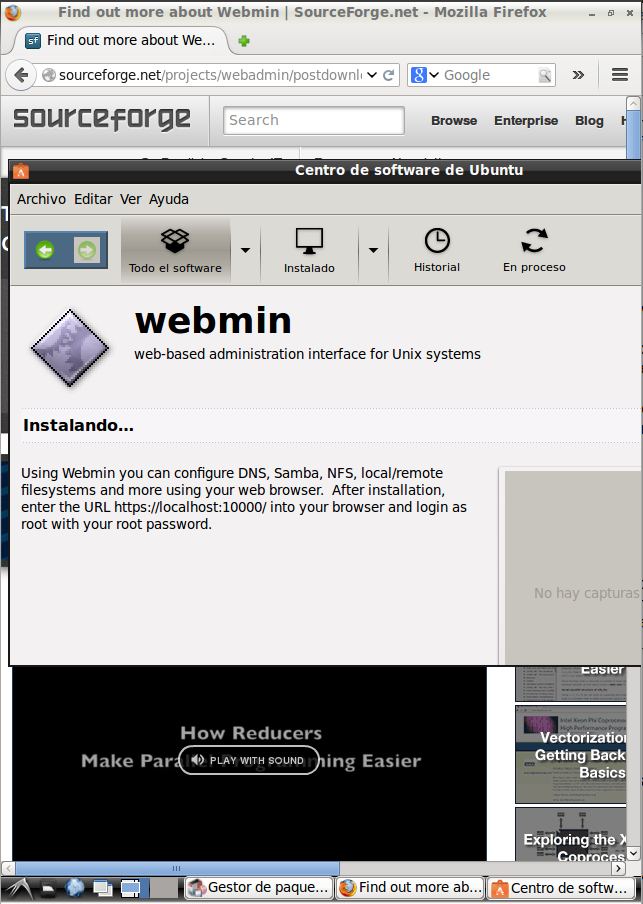

- Módulo: Sistemas Operativos
- Título del trabajo Monitorización y auditoría
- Componentes del grupo: Eliot Farrais
- Curso Académico: 2013/2014
- Fecha de entrega: 9 de junio de 2014
Activamos una de las auditorías de seguridad, para auditar los inicios de sesión al sistema
Creamos los usuarios con los que realizaremos la auditoría
Creamos los siguientes filtros, los siguientes eventos son de apagado y encendido del sistema
Vemos los apagados y encendido del sistema
Link a el filtro de evento
archivo.evtxDescargamos el programa webadmin
Bla bla bla bla...